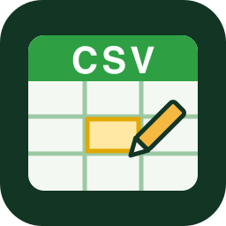
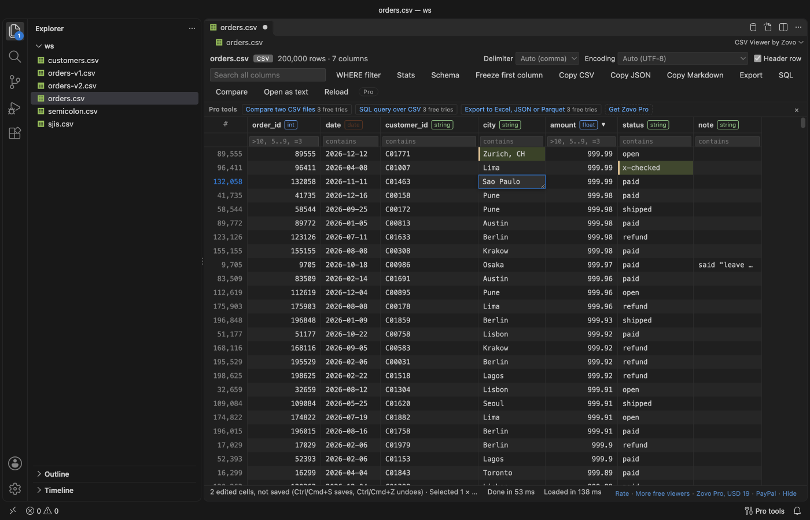
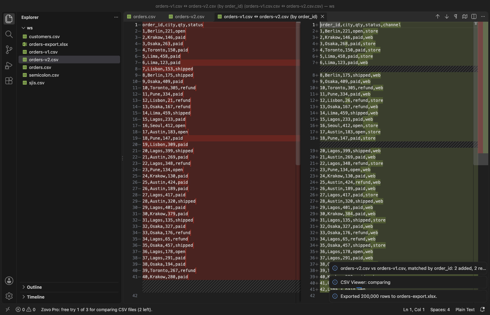

CSV Viewer & CSV Editor
CSV Viewer & CSV Editor, a VS Code extension by Zovo
Open CSV, TSV and PSV files in VS Code as a fast table, edit cells and save them back into the file. Big files open in seconds: the first rows show while the rest is read, and only the rows on screen are drawn. Everything runs on your computer, with no account and no network calls. By Zovo.
Free, MIT license. Needs VS Code 1.90.0 or newer. Extension ID zovo.zovo-csv-viewer, version 0.1.0.
Zovo Pro: USD 19 once, for the Pro tools in every Zovo extension. Viewing, editing, sort, filter and stats are free.

Questions people ask
Is CSV Viewer & CSV Editor free?
Yes. CSV Viewer & CSV Editor is free and MIT licensed.
How do I install CSV Viewer & CSV Editor?
Click "Install in VS Code" above, or search for zovo.zovo-csv-viewer in the Extensions view.
Free
- Click a
.csv,.tsv,.tabor.psvfile and it opens as a table. "Open as text" in the editor title shows the raw file. - Big files: the file is read as a stream (first rows at once) and the grid draws only the rows and columns on screen. Up to 1,000,000 rows and 512 MB go into the table by default (settings).
- Edit cells: double-click, press F2 or just start typing. Enter keeps the value, Esc cancels, Alt+Enter adds a line break, Tab moves right. Undo, redo, Save and Save As work as in any editor, and edited cells are marked until you save.
- Safe saving: only the fields you edited are rewritten. Every other byte of the file stays as it was: quotes, spacing, line ends and a byte order mark. The new file is written next to the old one and then swapped in, so a full disk or a crash never leaves half a file.
- Sort by any column (numbers sort as numbers, dates as dates), filter per column (
>100,5..9,=exact,!not,empty), search all columns, and a WHERE filter such asprice > 20 AND city LIKE 'Lon%'. - Column stats: count, empty, distinct, min, max, mean or length, and the top values of each column.
- Delimiter detection (comma, semicolon, tab, pipe, colon) and encoding detection (UTF-8 and UTF-16 with or without a byte order mark, Windows-1252, 1250 and 1251, Shift_JIS, GB18030, Big5, EUC-KR and more). Both can be changed in the toolbar, as can the header row.
- Copy a selection as CSV, TSV, JSON or a Markdown table. Export the rows in view, filtered and sorted, as CSV or TSV.
- Reloads by itself when the file changes on disk (a script, git or another editor), and keeps sort and filters. Never while you have unsaved edits.
- Freeze the first column, resize columns, and read long cells in full in the value panel (Shift+Enter), with JSON indented.
- Works offline, in untrusted workspaces and on remote and virtual file systems.
Zovo Pro tools
Each tool has 3 free tries on your computer. A try counts only when the tool did its work.
- Compare two CSV files: rows are matched by a key column (CSV Viewer suggests one that is filled and unique in both files), so rows that moved do not show as changed. Both files open side by side in the diff editor in key order, shared columns first, and a summary says how many rows were added, removed and changed, which columns changed most, and which columns are new or gone. Also works against the Git HEAD version of the file.
- SQL query over CSV: SELECT with WHERE, GROUP BY, COUNT, SUM, AVG, MIN, MAX, ORDER BY, LIMIT, CASE, date functions and JOIN with other CSV files of the workspace by path. It reads the whole file as a stream, even a CSV of several GB, and the result opens in the same grid, where you can sort, filter and export it. One try covers every query in the same tab.
- Export to Excel, JSON or Parquet: the rows in view, filtered and sorted, as an
.xlsxworkbook (bold header that stays in view, AutoFilter, numbers as numbers), JSON, JSON Lines or a typed, compressed Parquet file for pandas, DuckDB or Spark.

Zovo Pro is USD 19 once and turns on the Pro tools in all Zovo extensions. Open it from the Pro badge in the toolbar, the Pro tools row, or the "Zovo Pro" commands. Everything that is free stays free.
Keys
| Key | What it does |
|---|---|
| Double-click, F2, Enter, or typing | Edit the cell |
| Enter / Tab / Esc in the editor | Keep and move down / keep and move right / cancel |
| Alt+Enter in the editor | Line break inside the cell |
| Delete | Empty the selected cell |
| Ctrl+Z, Ctrl+Shift+Z, Ctrl+S (Cmd on macOS) | Undo, redo, save |
| Shift+Enter | Show the full value of the cell |
| Ctrl+C | Copy the selection as TSV, ready to paste into a spreadsheet |
Settings
| Setting | Default | What it does |
|---|---|---|
csvViewer.maxRows | 1000000 | Rows read into the table |
csvViewer.maxFileSizeMB | 512 | MB read into the table |
csvViewer.readOnly | false | Turn cell editing off |
csvViewer.autoReload | true | Read the file again when it changes on disk |
csvViewer.maxCompareRows | 200000 | Rows compared per file |
csvViewer.queryMemoryMB | 512 | Memory one SQL query may keep |
csvViewer.showProFeatures | true | Show the Pro badge, the Pro tools row and the Explorer entries |
To open CSV files in the text editor by default instead, add "workbench.editorAssociations": { "*.csv": "default" } to your settings, or right-click a file and pick "Open With...".
Limits
- Cell editing works on UTF-8 files and on single-byte code pages (Windows-1252, 1250, 1251, ISO-8859-15, KOI8-R). Files read as UTF-16, Shift_JIS, GB18030, Big5, EUC-KR or EUC-JP open read-only.
- You can edit cells, but not add, delete or move rows and columns yet, and not rename headers in the table.
- Edits are matched to the file by row number. If another program changes the file while you have unsaved edits, Save asks before it writes them.
- Rows past
csvViewer.maxRowsorcsvViewer.maxFileSizeMBare not in the table (a banner says so). SQL queries read the whole file. - Excel export stops at Excel's own limit of 1,048,576 rows and 16,384 columns.
Privacy
CSV Viewer reads your files on your computer and sends nothing anywhere. There is no telemetry. A browser page opens only when you click a Zovo Pro or support link.
Install CSV Viewer & CSV Editor
Click the button to open VS Code and install it, or press Ctrl+P (Cmd+P on macOS) in VS Code and run ext install zovo.zovo-csv-viewer.
Free, MIT license. Needs VS Code 1.90.0 or newer. Extension ID zovo.zovo-csv-viewer, version 0.1.0.
Source code and issues are on GitHub.
Zovo Pro and support
Zovo Pro: USD 19 once, every Zovo viewer. It turns on the Pro tools in this extension and in the other Zovo extensions you use. The free features stay free.
After a card payment your license key shows on the next page. Paste it with the command "Zovo Pro: Enter a key".
You can also support the work with no Pro:
Need your format supported?
Open a format request with a sample file, and I reply there whether it can be done. For USD 299 once, through this GitHub Sponsors tier, I add your file format or a missing feature to this extension, with tests, within 7 days.